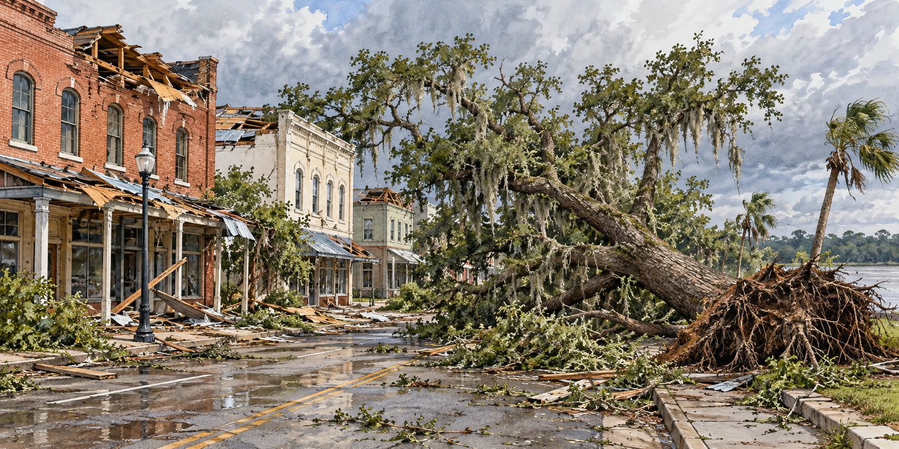

Hurricane Charley (2004)
A Small Storm That Followed the Peace River Straight Through the Heart of Florida

“It was the scariest thing I ever been through.” — Michael Welborn, Charlotte Harbor
Michael Welborn rode out Hurricane Charley sitting at the foot of his bathtub, his child beside him, watching the rest of his house come apart. Rain poured into the bedroom once the roof was gone. Welborn lived in Charlotte Harbor, a waterfront community most of the country had never heard of before August 13, 2004, and one that almost everyone in Florida has thought of every time a hurricane has threatened that stretch of coast since.
A Storm That Fooled the Forecast
Charley was a small storm. Its eye measured only six to ten miles across, and its most violent winds ran in a corridor barely ten miles wide. But forecasts and public attention had centered on a Tampa Bay landfall, and many residents fixated on the “skinny black line” through the middle of the National Hurricane Center’s forecast cone. At the last moment Charley turned sharply northeast, into Charlotte Harbor. The turn was inside the cone of uncertainty, but many people watching the center line were not ready for it.
The storm also intensified explosively in its final hours, from a 110-mile-per-hour hurricane to a 150-mile-per-hour Category 4 in roughly three hours. It came ashore near Cayo Costa at peak strength, crossed the northern tip of Captiva Island and Bokeelia, and passed directly over Punta Gorda, a town of about fifteen thousand.
Up the Peace River, Town by Town
Rather than dispersing across the peninsula, Charley tracked north-northeast almost exactly along the Peace River corridor, hitting a chain of small towns: Punta Gorda, Port Charlotte, Cleveland, Fort Ogden, Nocatee, Arcadia, Zolfo Springs, Sebring, Lake Placid and Wauchula. Each took damage out of proportion to its size and distance from the coast.
In Arcadia, roughly ninety-five percent of downtown buildings were damaged, and the town’s only shelter had its roof torn open mid-storm, leaving 3,500 evacuees exposed to the wind and rain they had come to escape. Zolfo Springs was cut off for nearly two days behind fallen trees, snapped poles and ruined transformers. In Wauchula, gusts reached 147 miles per hour and buildings in the historic downtown collapsed onto Main Street.
What Happened to the Old Oaks
Live oaks are among the most wind-resistant trees in Florida, typically outperforming pines and laurel oaks in storm after storm. Charley tested even them. University of Florida research measuring tree survival after several Florida hurricanes documented damage to live oaks as well as other tree species. Many of the oaks lost along the Peace River basin had stood through generations of cattle ranching and pioneer settlement.
A Toll Measured Two Ways
The most commonly cited federal count is ten direct deaths in the United States, a modest figure beside the destruction. Counting indirect deaths, such as heart attacks, cleanup accidents and generator carbon monoxide poisoning, some tallies run as high as thirty-three.
The property toll was severe: more than 20,000 homes destroyed statewide, total Florida damage estimated at $14 billion to $16.3 billion, and at the time the second-largest insured loss in U.S. history after Hurricane Andrew, with more than 600,000 claims filed in Florida. Hardee County alone reported $750 million in damage and 1,400 homes destroyed.
The First of Four
Charley opened a brutal season: four hurricanes struck Florida in six weeks, with Frances, Ivan and Jeanne following. A University of Florida study of damage from all four found that homes built under the post-Andrew building code fared measurably better than homes built just before it, a hard-won validation of the lessons of 1992. The name Charley was retired in 2005. In October 2024, Hurricane Milton followed a similar track toward the same coast, and Charlotte Harbor and Punta Gorda residents described the same dread Charley had taught them.
Why It Matters
A hurricane’s lasting damage is not only measured in homes and claims; the oak canopy of the Peace River basin took a documented loss. And Charley is a lasting lesson in forecast uncertainty: the cone is a range of possibilities, not a fixed prediction.
Quick Facts
| Florida landfall | Near Cayo Costa, August 13, 2004, Category 4 |
|---|---|
| Landfall winds | 150 mph sustained |
| Size | Eye 6–10 miles wide; strongest winds in a band about 10 miles wide |
| Forecast surprise | Tampa expected; last-minute turn northeast into Charlotte Harbor |
| Path inland | Punta Gorda to Wauchula along the Peace River corridor |
| Deaths | 10 direct (U.S.); up to 33 counting indirect deaths |
| Damage | $14–$16.3 billion in Florida; 20,000+ homes destroyed |
| Name retired | Yes, by the World Meteorological Organization, 2005 |
Did You Know?
Arcadia’s only storm shelter had its roof torn open during the hurricane, exposing 3,500 evacuees.
Charley intensified from 110 to 150 mph in about three hours before landfall.
University of Florida research examined tree survival after Charley and other Florida hurricanes.
Vocabulary
Cone of uncertainty: the area showing where a storm’s center may travel; it is not a map of where damage will occur.
Rapid intensification: a sharp strengthening of a hurricane in a short period.
Insured loss: the portion of storm damage covered by insurance claims.
Discussion Questions
1. Why might a small storm still cause outsized damage along a narrow path?
2. How did the forecast cone shape what residents expected, and what could be done differently?
Related Articles
FLH-0007 — Hurricane Andrew (1992)
FLH-0009 — Frances and Jeanne (2004)
FLH-0010 — Hurricane Wilma (2005)
FLH-0012 — Hurricane Ian (2022)
Sources
Wikipedia. “Hurricane Charley.”
NOAA Atlantic Oceanographic and Meteorological Laboratory. “Tenth Anniversary of Hurricane Charley.” aoml.noaa.gov
National Weather Service. “Service Assessment: Hurricane Charley, August 9–15, 2004.” weather.gov
NPR. “Milton Conjures Memories of Hurricane Charley for the Florida City of Punta Gorda.” npr.org
WWSB ABC7 / My Suncoast. “Looking Back: Hurricane Charley Hit 21 Years Ago.” mysuncoast.com
Duryea, M.L., et al. “Hurricanes and the Urban Forest.” Arboriculture & Urban Forestry 33, no. 2 (2007). auf.isa-arbor.com
Florida Department of Environmental Protection. Post-storm damage assessment, Hurricane Charley. floridadep.gov
HowStuffWorks. “Remembering Hurricane Charley.”